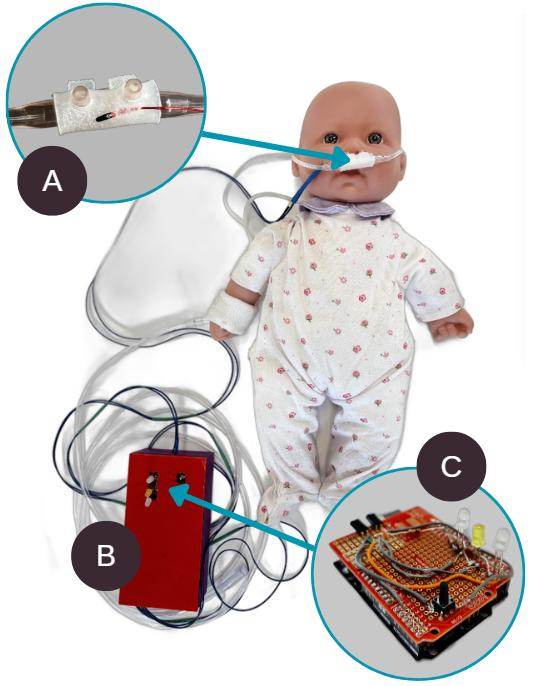
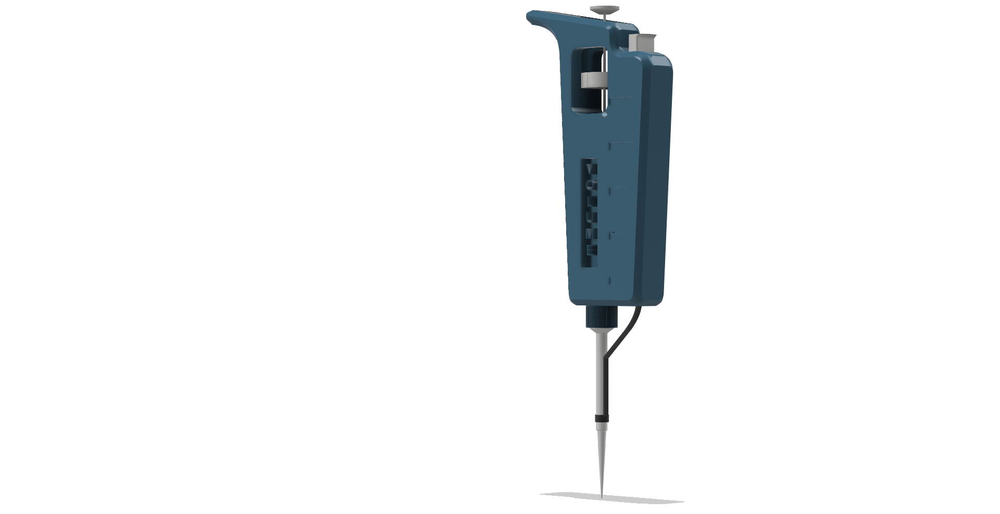
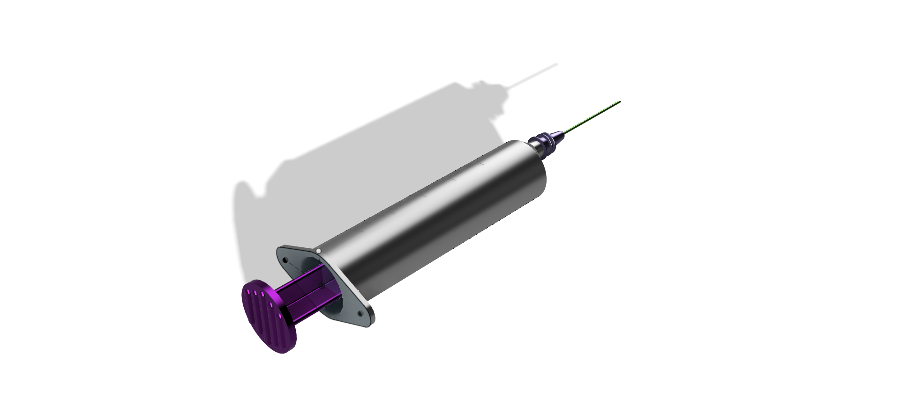

BIOMEDICAL ENGINEERING · DUKE UNIVERSITY
Nandini
Gopalakrishnan
Engineering Portfolio
I'm an engineering student who enjoys turning class projects into working prototypes, and CAD is where I keep exploring the mechanical side on my own.
Full builds from coursework — circuits, code, and mechanical design combined into working devices.

INTRO TO ENGINEERING · TEAM PROJECT
Nasal Cannula Dislodgement Detector
A wearable alert system that tells nurses in low-resource neonatal wards when an infant's oxygen cannula has slipped out of place.
View Project →
COMPUTING FOR ENGINEERS · TEAM PROJECT
Pulse Oximeter Simulation
An Arduino-based pulse oximeter built from an LED sensor and custom signal-processing code that outputs live BPM and SpO2 readings.
View Project →Independent CAD studies I take on outside of class, usually sparked by something I built or noticed elsewhere — including the two designs below.

LABORATORY INSTRUMENT
Micropipette
A multi-component micropipette with a sliding plunger, threaded collar, and tip-ejection mechanism.
View Project →
MEDICAL DEVICE DESIGN
Pulse Oximeter Housing
A compact fingertip housing modeled after my Arduino pulse oximeter build, with a functional hinged assembly.
View Project →
MEDICAL DEVICE CAD STUDY
Syringe
A syringe assembly modeled to build proficiency with parametric CAD and precision geometry.
View Project →I like to turn ideas into things I can build.
I'm a Biomedical Engineering student at Duke University interested in designing practical solutions to healthcare challenges. My coursework projects combine circuits, code, and mechanical design into working devices, while my CAD work is where I explore the mechanical side further on my own.
I have experience with CAD, rapid prototyping, embedded electronics, 3D printing, and iterative design.